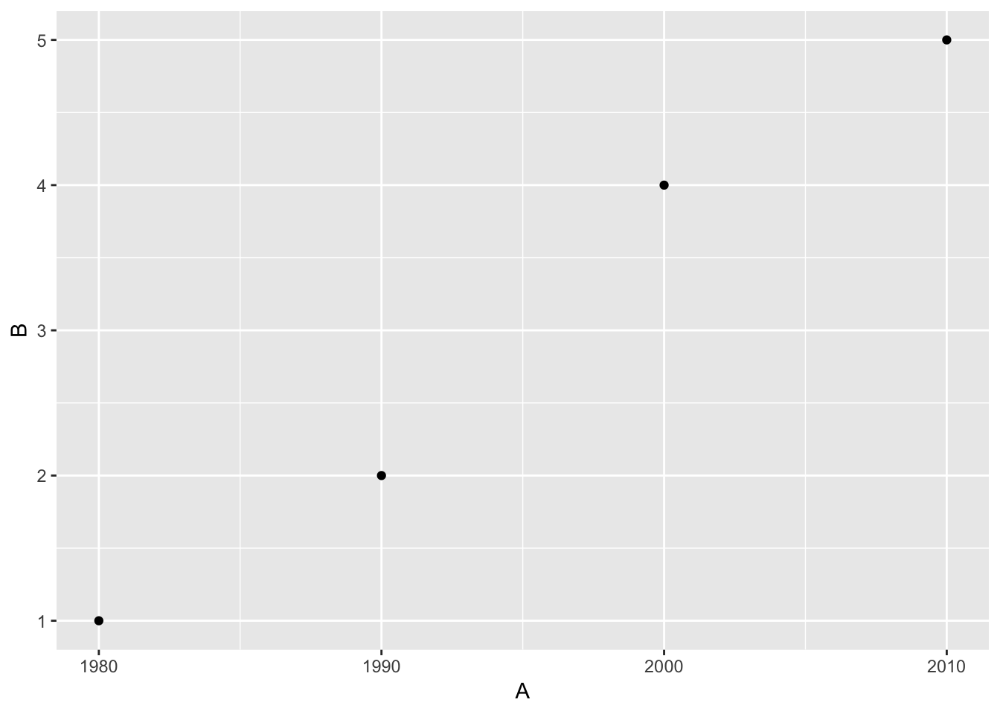
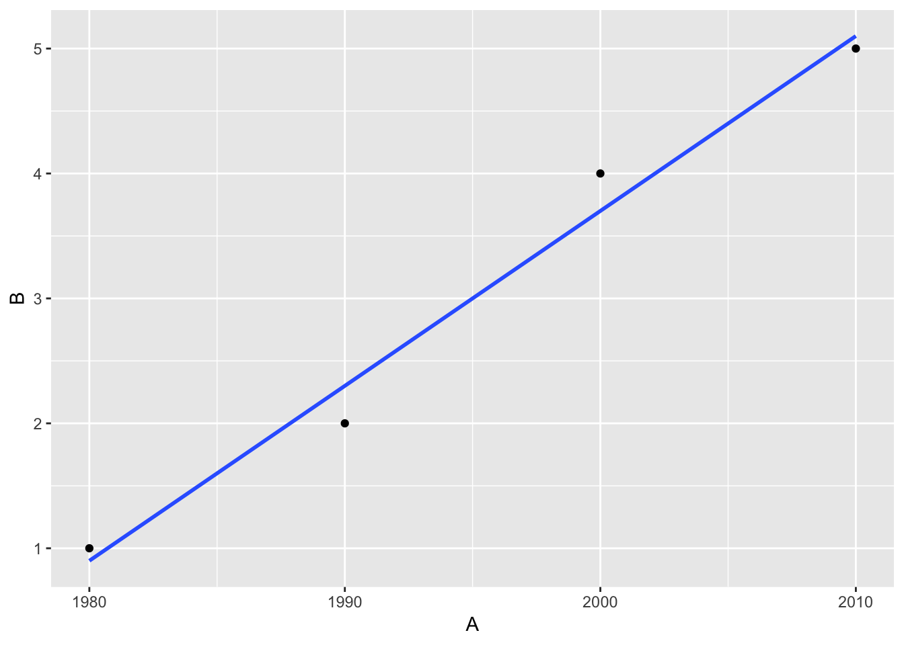
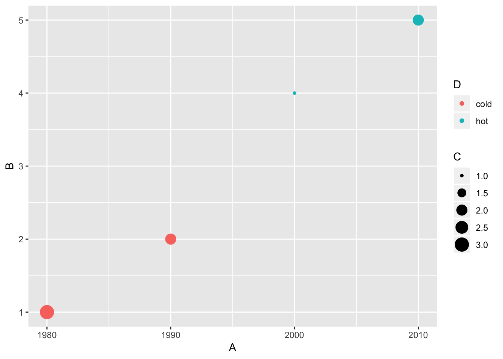
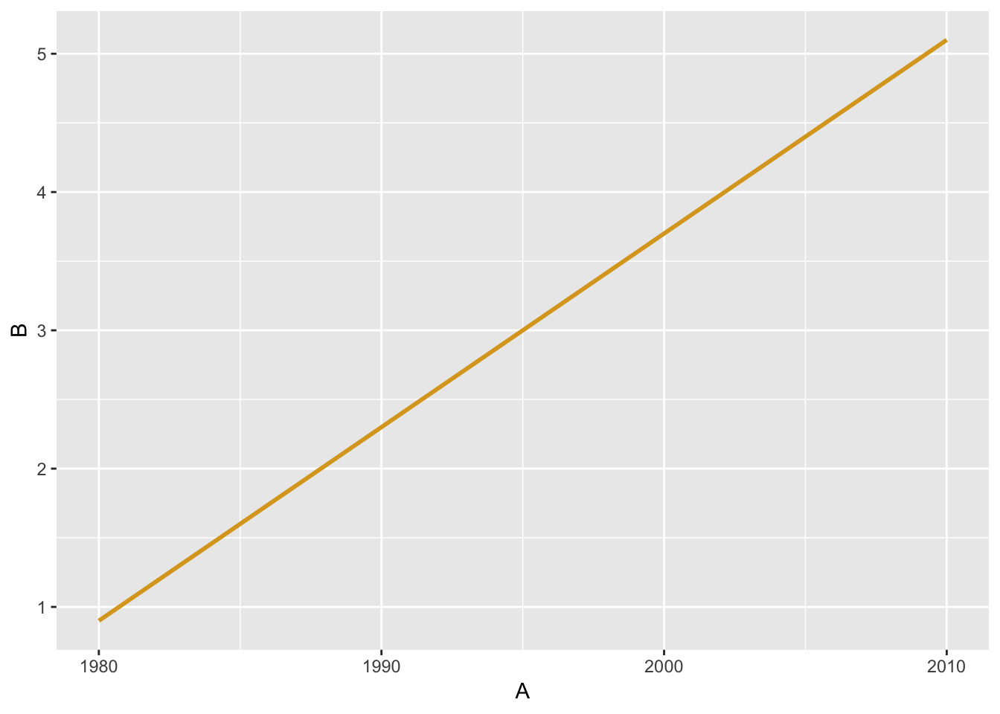

In this section, we’ll discuss the Grammar of Graphics developed by Leland Wilkinson and implemented in R via Hadley Wickham. We’ll see how this is applied to a scatterplot with and without a regression line. These ideas will then be extended in Part 2 of the workshop.
The Grammar of Graphics
- What are the variables here?
- What is the observational unit?
- i.e., what is the THING being measured?
- How are the variables mapped to aesthetics?
What is a statistical graphic?
A mapping of data variables
to aes()thetic attributes
of geom_etric objects.
Back to basics
Consider the following data in tidy format:
- Sketch the graphics below on paper, where the
x-axis is variable A and the y-axis is variable B
- A scatterplot
- A scatterplot with fitted least-squares regression line
Intermediate folks:
- A scatter plot where the
color of the points corresponds to D and the size of the points corresponds to C
- Only show a regression line of color “goldenrod” (no points and also no error bounds)
- A scatterplot
ggplot(data = simple_ex, mapping = aes(x = A, y = B)) +
geom_point()

- A scatterplot with fitted least-squares regression line
ggplot(data = simple_ex, mapping = aes(x = A, y = B)) +
geom_point() +
geom_smooth(method = "lm", se = FALSE)

Intermediate
- A scatter plot where the
color of the points corresponds to D and the size of the points corresponds to C
ggplot(data = simple_ex, mapping = aes(x = A, y = B)) +
geom_point(mapping = aes(color = D, size = C))

- Only show a regression line of color “goldenrod” (no points and also no error bounds). Here
"lm" stands for “linear model.”
ggplot(data = simple_ex, mapping = aes(x = A, y = B)) +
geom_smooth(method = "lm", se = FALSE, color = "goldenrod")

Your Task
Recreate the gapminder plot shown at the beginning of this workshop (and below) using ggplot2 and the gapminder data frame in the gapminder package. The Data Visualization Cheat Sheet from RStudio may be helpful.
Note: To focus on only the rows in the data frame corresponding to 1992 we’ve created a dataset and saved the file as a CSV (basic spreadsheet) file in the data folder. Recall from this morning’s workshop, the filter function from dplyr can be used to perform this. (Try on your own to do this if you wish!)
library(gapminder)
gap1992 <- read_csv("data/gap1992.csv")
#Space for your answer here.
What you learned in this section
- Identifying plot aesthetics
- Mapping data variables to aesthetics using the Grammar of Graphics
- Applying a line of best fit to a scatterplot
- Using transformations on your data and labeling your axes
LS0tCnRpdGxlOiAiUGFydCAxIC0gSW50cm8gdG8gdGhlIGdSYW1tYXIgb2YgZ1JhcGhpY3Mgd2l0aCBgZ2dwbG90MmAiCmF1dGhvcjogIkNoZXN0ZXIgSXNtYXkiCm91dHB1dDogCiAgaHRtbF9kb2N1bWVudDoKICAgIGNvZGVfZG93bmxvYWQ6IHRydWUKICAgIGNvZGVfZm9sZGluZzogaGlkZQotLS0KCkluIHRoaXMgc2VjdGlvbiwgd2UnbGwgZGlzY3VzcyB0aGUgR3JhbW1hciBvZiBHcmFwaGljcyBkZXZlbG9wZWQgYnkgW0xlbGFuZCBXaWxraW5zb25dKGh0dHA6Ly93d3cucG93ZWxscy5jb20vYm9vay90aGUtZ3JhbW1hci1vZi1ncmFwaGljcy05NzgwMzg3MjQ1NDQ3KSBhbmQgaW1wbGVtZW50ZWQgaW4gUiB2aWEgW0hhZGxleSBXaWNraGFtXShodHRwOi8vd3d3LnBvd2VsbHMuY29tL2Jvb2svZ2dwbG90Mi1lbGVnYW50LWdyYXBoaWNzLWZvci1kYXRhLWFuYWx5c2lzLTk3ODMzMTkyNDI3NTAvNjgtNDI4KS4gIFdlJ2xsIHNlZSBob3cgdGhpcyBpcyBhcHBsaWVkIHRvIGEgc2NhdHRlcnBsb3Qgd2l0aCBhbmQgd2l0aG91dCBhIHJlZ3Jlc3Npb24gbGluZS4gIFRoZXNlIGlkZWFzIHdpbGwgdGhlbiBiZSBleHRlbmRlZCBpbiBQYXJ0IDIgb2YgdGhlIHdvcmtzaG9wLgoKIyMgVGhlIEdyYW1tYXIgb2YgR3JhcGhpY3MKCiFbXShmaWdzL2dhcG1pbmRlci5wbmcpCgotIFdoYXQgYXJlIHRoZSB2YXJpYWJsZXMgaGVyZT8KLSBXaGF0IGlzIHRoZSBvYnNlcnZhdGlvbmFsIHVuaXQ/CiAgICAtIGkuZS4sIHdoYXQgaXMgdGhlIFRISU5HIGJlaW5nIG1lYXN1cmVkPwotIEhvdyBhcmUgdGhlIHZhcmlhYmxlcyBtYXBwZWQgdG8gYWVzdGhldGljcz8KCi0tLQoKIyMgV2hhdCBpcyBhIHN0YXRpc3RpY2FsIGdyYXBoaWM/CgoKIyMjIEEgYG1hcHBpbmdgIG9mIGBkYXRhYCB2YXJpYWJsZXMKCiMjIyB0byBgYWVzKClgdGhldGljIGF0dHJpYnV0ZXMKCiMjIyBvZiBgZ2VvbV9gZXRyaWMgb2JqZWN0cy4KCi0tLQoKKipCYWNrIHRvIGJhc2ljcyoqCgpDb25zaWRlciB0aGUgZm9sbG93aW5nIGRhdGEgaW4gdGlkeSBmb3JtYXQ6CgpgYGB7ciBpbmNsdWRlPUZBTFNFfQpsaWJyYXJ5KHRpZHl2ZXJzZSkKCnNpbXBsZV9leCA8LSBkYXRhX2ZyYW1lKAogICAgQSA9IGMoMTk4MCwgMTk5MCwgMjAwMCwgMjAxMCksCiAgICBCID0gYygxLCAyLCA0LCA1KSwKICAgIEMgPSBjKDMsIDIsIDEsIDIpLAogICAgRCA9IGMoImNvbGQiLCAiY29sZCIsICJob3QiLCAiaG90IikKICApCnNpbXBsZV9leApgYGAKCi0gU2tldGNoIHRoZSBncmFwaGljcyBiZWxvdyBvbiBwYXBlciwgd2hlcmUgdGhlIGB4YC1heGlzIGlzIHZhcmlhYmxlIGBBYCBhbmQgdGhlIGB5YC1heGlzIGlzIHZhcmlhYmxlIGBCYAoKMS4gQSBzY2F0dGVycGxvdAoxLiBBIHNjYXR0ZXJwbG90IHdpdGggZml0dGVkIGxlYXN0LXNxdWFyZXMgcmVncmVzc2lvbiBsaW5lIAoKSW50ZXJtZWRpYXRlIGZvbGtzOgoKLSAzLiBBIHNjYXR0ZXIgcGxvdCB3aGVyZSB0aGUgYGNvbG9yYCBvZiB0aGUgcG9pbnRzIGNvcnJlc3BvbmRzIHRvIGBEYCBhbmQgdGhlIGBzaXplYCBvZiB0aGUgcG9pbnRzIGNvcnJlc3BvbmRzIHRvIGBDYAotIDQuIE9ubHkgc2hvdyBhIHJlZ3Jlc3Npb24gbGluZSBvZiBjb2xvciAiZ29sZGVucm9kIiAobm8gcG9pbnRzIGFuZCBhbHNvIG5vIGVycm9yIGJvdW5kcykKCgotLS0KCjEuIEEgc2NhdHRlcnBsb3QKCmBgYHtyfQpnZ3Bsb3QoZGF0YSA9IHNpbXBsZV9leCwgbWFwcGluZyA9IGFlcyh4ID0gQSwgeSA9IEIpKSArIAogIGdlb21fcG9pbnQoKQpgYGAKCjIuIEEgc2NhdHRlcnBsb3Qgd2l0aCBmaXR0ZWQgbGVhc3Qtc3F1YXJlcyByZWdyZXNzaW9uIGxpbmUgCgpgYGB7cn0KZ2dwbG90KGRhdGEgPSBzaW1wbGVfZXgsIG1hcHBpbmcgPSBhZXMoeCA9IEEsIHkgPSBCKSkgKyAKICBnZW9tX3BvaW50KCkgKwogIGdlb21fc21vb3RoKG1ldGhvZCA9ICJsbSIsIHNlID0gRkFMU0UpCmBgYAoKCioqSW50ZXJtZWRpYXRlKioKCjMuIEEgc2NhdHRlciBwbG90IHdoZXJlIHRoZSBgY29sb3JgIG9mIHRoZSBwb2ludHMgY29ycmVzcG9uZHMgdG8gYERgIGFuZCB0aGUgYHNpemVgIG9mIHRoZSBwb2ludHMgY29ycmVzcG9uZHMgdG8gYENgCgpgYGB7cn0KZ2dwbG90KGRhdGEgPSBzaW1wbGVfZXgsIG1hcHBpbmcgPSBhZXMoeCA9IEEsIHkgPSBCKSkgKyAKICBnZW9tX3BvaW50KG1hcHBpbmcgPSBhZXMoY29sb3IgPSBELCBzaXplID0gQykpCmBgYAoKCjQuIE9ubHkgc2hvdyBhIHJlZ3Jlc3Npb24gbGluZSBvZiBjb2xvciAiZ29sZGVucm9kIiAobm8gcG9pbnRzIGFuZCBhbHNvIG5vIGVycm9yIGJvdW5kcykuIEhlcmUgYCJsbSJgIHN0YW5kcyBmb3IgImxpbmVhciBtb2RlbC4iCgpgYGB7cn0KZ2dwbG90KGRhdGEgPSBzaW1wbGVfZXgsIG1hcHBpbmcgPSBhZXMoeCA9IEEsIHkgPSBCKSkgKyAKICBnZW9tX3Ntb290aChtZXRob2QgPSAibG0iLCBzZSA9IEZBTFNFLCBjb2xvciA9ICJnb2xkZW5yb2QiKQpgYGAKCi0tLQoKIyMgWW91ciBUYXNrCgpSZWNyZWF0ZSB0aGUgZ2FwbWluZGVyIHBsb3Qgc2hvd24gYXQgdGhlIGJlZ2lubmluZyBvZiB0aGlzIHdvcmtzaG9wIChhbmQgYmVsb3cpIHVzaW5nIGBnZ3Bsb3QyYCBhbmQgdGhlIGBnYXBtaW5kZXJgIGRhdGEgZnJhbWUgaW4gdGhlIGBnYXBtaW5kZXJgIHBhY2thZ2UuICBUaGUgW0RhdGEgVmlzdWFsaXphdGlvbiBDaGVhdCBTaGVldF0oaHR0cHM6Ly9naXRodWIuY29tL3JzdHVkaW8vY2hlYXRzaGVldHMvcmF3L21hc3Rlci9kYXRhLXZpc3VhbGl6YXRpb24tMi4xLnBkZikgZnJvbSBbUlN0dWRpb10oaHR0cHM6Ly93d3cucnN0dWRpby5jb20vcmVzb3VyY2VzL2NoZWF0c2hlZXRzLykgbWF5IGJlIGhlbHBmdWwuICAKCioqTm90ZSoqOiAgVG8gZm9jdXMgb24gb25seSB0aGUgcm93cyBpbiB0aGUgZGF0YSBmcmFtZSBjb3JyZXNwb25kaW5nIHRvIDE5OTIgd2UndmUgY3JlYXRlZCBhIGRhdGFzZXQgYW5kIHNhdmVkIHRoZSBmaWxlIGFzIGEgQ1NWIChiYXNpYyBzcHJlYWRzaGVldCkgZmlsZSBpbiB0aGUgYGRhdGFgIGZvbGRlci4gUmVjYWxsIGZyb20gdGhpcyBtb3JuaW5nJ3Mgd29ya3Nob3AsIHRoZSBgZmlsdGVyYCBmdW5jdGlvbiBmcm9tIGBkcGx5cmAgY2FuIGJlIHVzZWQgdG8gcGVyZm9ybSB0aGlzLiAoVHJ5IG9uIHlvdXIgb3duIHRvIGRvIHRoaXMgaWYgeW91IHdpc2ghKQoKIVtdKGZpZ3MvZ2FwbWluZGVyLnBuZykKCmBgYHtyfQpsaWJyYXJ5KGdhcG1pbmRlcikKZ2FwMTk5MiA8LSByZWFkX2NzdigiZGF0YS9nYXAxOTkyLmNzdiIpCgojU3BhY2UgZm9yIHlvdXIgYW5zd2VyIGhlcmUuCgpgYGAKCiMjIFdoYXQgeW91IGxlYXJuZWQgaW4gdGhpcyBzZWN0aW9uCgotIElkZW50aWZ5aW5nIHBsb3QgYWVzdGhldGljcwotIE1hcHBpbmcgZGF0YSB2YXJpYWJsZXMgdG8gYWVzdGhldGljcyB1c2luZyB0aGUgR3JhbW1hciBvZiBHcmFwaGljcyAKLSBBcHBseWluZyBhIGxpbmUgb2YgYmVzdCBmaXQgdG8gYSBzY2F0dGVycGxvdAotIFVzaW5nIHRyYW5zZm9ybWF0aW9ucyBvbiB5b3VyIGRhdGEgYW5kIGxhYmVsaW5nIHlvdXIgYXhlcw==